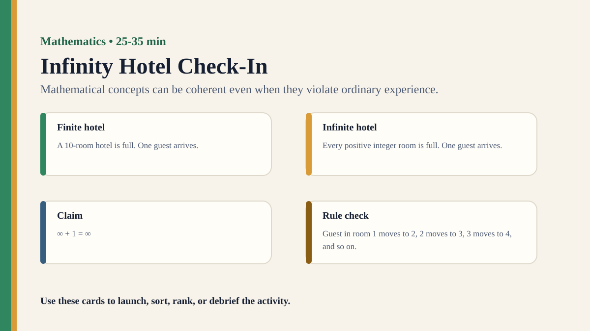

Premium draft resource
Infinity Hotel Check-In Classroom Run Kit
Students act out Hilbert's Hotel to examine why mathematical infinity resists everyday intuition.
Back to Infinity Hotel Check-In
One-Minute Teacher Brief
Students act out Hilbert's Hotel to examine why mathematical infinity resists everyday intuition.
Big idea: Mathematical concepts can be coherent even when they violate ordinary experience.
Student Prompt
Inspect Infinity Hotel Check-In Stimulus A. Record one first claim, the evidence you used, your confidence, and what would make you revise.
Concrete Stimulus Packet
Stimulus
Infinity Hotel Check-In Stimulus A
Student-facing stimulus 1: One new guest arrives at a full infinite hotel; every current guest moves by . Work the example, then decide whether it gives a pattern, a model, a calculation, or a proof.
Students inspect this exact card first and commit to a claim before hearing anyone else.Stimulus
Infinity Hotel Check-In Stimulus B
Student-facing stimulus 2: Claim card: feels impossible until the rule is specified. Work the example, then decide whether it gives a pattern, a model, a calculation, or a proof.
Use this for comparison, a second round, or a partner challenge.Stimulus
Infinity Hotel Check-In Reveal / Twist
Student-facing stimulus 3: Claim card: feels impossible until the rule is specified. Work the example, then decide whether it gives a pattern, a model, a calculation, or a proof.
Teacher reveal: connect the changed response to the big idea — Mathematical concepts can be coherent even when they violate ordinary experience.Actual Lesson Questions
| # | Question for students | Teacher key / cue |
|---|---|---|
| 1 | After inspecting Infinity Hotel Check-In Stimulus A, what is your first knowledge claim? | Teacher cue: look for a clear claim, not just a description. |
| 2 | Which exact detail from Infinity Hotel Check-In Stimulus A did you use as evidence? | Teacher cue: students should name visible words, data, source features, method features, or contextual clues. |
| 3 | What did you infer beyond the evidence? | Teacher cue: this is where assumptions, framing, models, or perspective usually appear. |
| 4 | How confident are you: 50%, 60%, 70%, 80%, 90%, or 100%? | Teacher cue: confidence is data for the debrief, not a grade. |
| 5 | What missing information would most improve the knowledge claim? | Teacher cue: push for method, source, context, comparison, or definitions. |
| 6 | Can mathematics know beyond intuition? | Teacher cue: students should move from the classroom example to a general TOK issue. |
Student Task
Use the stimulus cards to complete the observation/inference/evidence/confidence grid, then answer one TOK knowledge question connected to Mathematics.
Teacher Key / Reveal
The key move is not the “right answer”; it is the moment students see how mathematical concepts can be coherent even when they violate ordinary experience.
- Strong response: separates observation from inference.
- Strong response: names a method, source, model, language choice, context, or perspective.
- Strong response: revises confidence when new evidence or a new criterion appears.
- Weak response: gives only opinion or says “it depends” without criteria.
Classroom materials
Printable Pack and Cards
Open the classroom resource pack for stimulus cards, CSV card deck, and the activity visual prompt.
Visual Prompt

Setup Checklist
- Use numbered cards on desks or around the room to represent hotel rooms.
- Make clear when students are reasoning about a formal model rather than a physically possible hotel.
Ready-to-Use Examples
- One new guest arrives at a full infinite hotel; every current guest moves by .
- Claim card: feels impossible until the rule is specified.
Run Resources
- Room card set and move-rule card.
- Reflection sheet: what felt impossible, what the rule showed, and what the model assumes.
Teacher Language
- Do not ask whether a real hotel could do this; ask whether the formal rule is coherent.
- Where did your everyday intuition stop helping?
Sample Student Output
- The model was coherent even though I could not picture the whole hotel.
- I learned that mathematical possibility can depend on definitions rather than physical imagination.
Procedure
- Assign students numbered hotel rooms and announce that every room is occupied.
- Introduce one new guest and ask whether the hotel can make room.
- Use the rule so each guest moves to the next room.
- Discuss why the model works for countably infinite rooms but not for a finite hotel.
- Debrief the difference between everyday imagination and formal definition.
Debrief Questions
- Knowledge question: Can mathematics produce knowledge about things we cannot imagine concretely?
- Why can a coherent formal system feel impossible?
- What is the role of intuition in mathematical knowledge?
Adaptations
- Support: act out the first ten rooms only.
- Challenge: add infinitely many new guests by moving each current guest from room n to room 2n.
Extension Tasks
- Compare countable infinity with a finite hotel and identify exactly where the rule fails.
- Ask whether mathematical objects need real-world counterparts to produce knowledge.